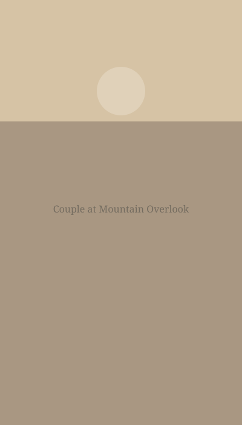
Overlook vows
Couples / Blue Ridge Parkway
Natural light photography in North Carolina
Warm, grounded photography for families, couples, quiet celebrations, and stories that feel most alive outside.
A slower way of seeing
I'm drawn to the in-between moments: wind in the grass, hands held without thinking, children running toward the light, and the hush that settles over a mountain view just before sunset. My work is warm, natural, and quietly artful, shaped by the landscapes and seasons of North Carolina.
Portfolio
A collection of portraits, wedding days, families, landscapes, and soft seasonal stories made with warm tones and natural light.

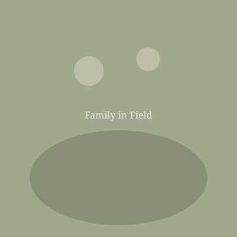
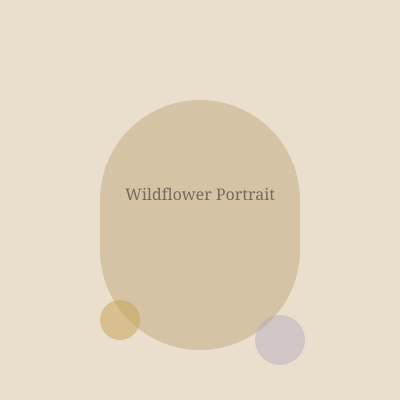
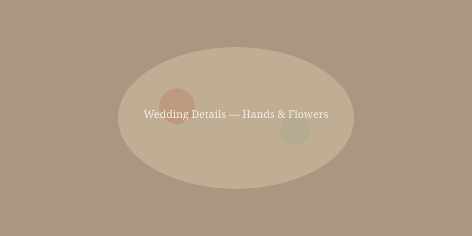
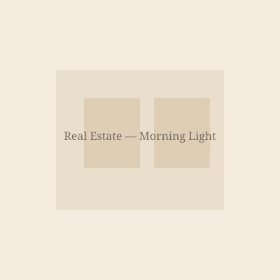
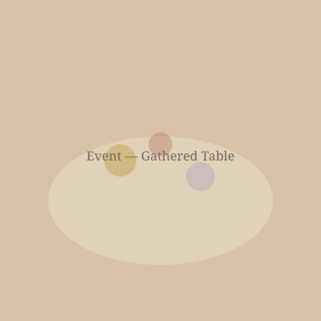
Offerings
Whether it's a wedding morning, a family season, a brand gathering, or a home filled with window light, the goal is the same: images that feel honest, warm, and lasting.
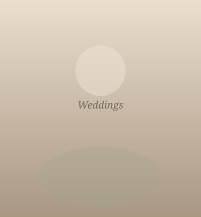
Calm, thoughtful coverage for sacred details, honest emotion, and golden-hour portraits.
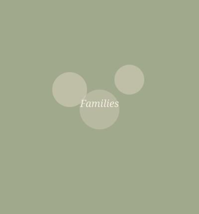
Seasonal sessions built around movement, connection, laughter, and the beauty of ordinary days.
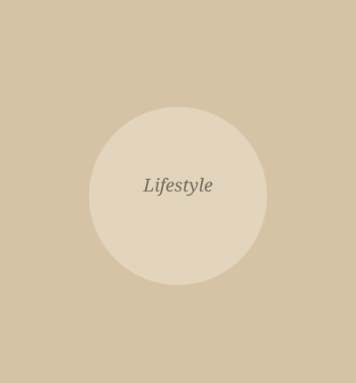
Portraits, personal branding, and creative imagery with a soft editorial feeling.
Intentional coverage for gatherings, celebrations, corporate moments, and meaningful milestones.
Clean, welcoming imagery that helps homes feel bright, grounded, and lived in with care.
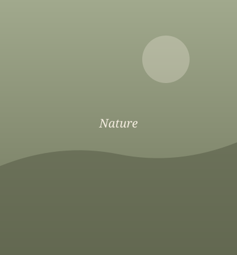
Landscape and detail work inspired by mountain ridges, native flowers, and quiet trails.
Style and approach
My photography is built around ease. I'll help with direction when you need it, then leave enough room for real connection to unfold. The best images often arrive quietly: a glance, a hand resting on a shoulder, the last light catching the edge of a dress, the way a child looks back before running ahead.
Soft, directional light with warm tones and an eye for the feeling of the season.
Images that feel lived in, personal, and true to the people inside them.
Fields, overlooks, homes, gardens, trails, and meaningful places with texture and soul.
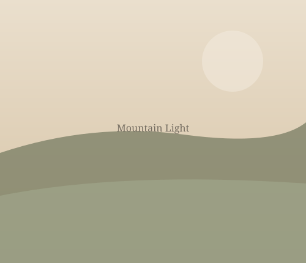
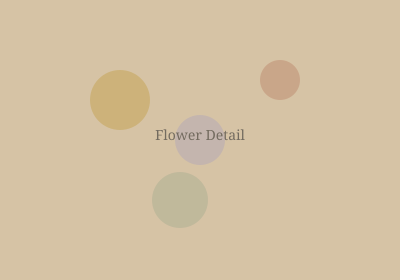
Kind words
Replace these sample testimonials with words from your clients once you begin collecting reviews.
The photos felt like us: warm, natural, and full of the little moments we didn't even realize were happening.
Sample client nameNothing felt rushed or stiff. The whole session was peaceful, and the final gallery had such a timeless feeling.
Sample client nameThe images were soft, beautiful, and honest. We'll treasure them through every season of our family.
Sample client nameInquire
Tell me what season you're in, what you're hoping to remember, and where the light feels most like home.